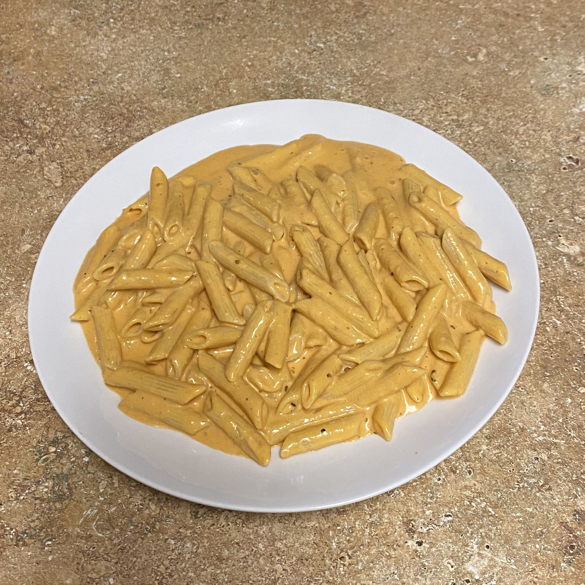

Hello, my name is Anna. I am originally from Long Island, New York and I am currently studying Mechanical Engineering as a junior at the University at Buffalo. My hobbies include music, cooking, and spending time at the beach. I love trying new things andgaining new experiences which is one of the reasons I came to UB and can't wait to see where life takes me afterwards.
Professional Connections
Feel free to look at my resume as well as connect with me on Linkedin.
My Pledging Experience
Throughout this entire experience I feel like I really pushed myself and have seen mine and the rest of my pledge class' hard work pay off. I really enjoyed being back in a woodshop and woodworking as I had years ago as well as being able to teach and share my excitement fo it with my fellow pledge brothers and create some great memories. Taking on new feats and creating my own webpage was somrthing I always thought would be cool but never thought I could do but now I've been able to master the basics and hopefully can do more in the future. My main takeaway was the community I have found within the fraternity with not only my pledge brothers but from brothers within the fraternity that have been there for as a helping hand, a professional connection, or simply a friend. As much as this process has pushed me to the limit in what I thought I was capable of, I wouldn't trade this experience for the world.
My Hobbies
All my life I have loved music in every form possibe, you will always catch me with a headphone in listening. Ever since I was young I loved going to see broadway musicals and the admiration for the actors and orchestra and really loving live music. It even inspired me to take up playing the viola for 5 years in elementary school. Now I love going to concerts and music festivals to experience live music from the artists I listen to everyday. I've been fortunate enough to see almost all my favorite artists live which includes Bad Bunny, Tyler the Creator, The Weeknd, and more.
Growing up some of the best times I spent with my family growing up was centered around cooking and taking care of one another. I love cooking for or with people as its always fun to exchange new foods or simply making a classic. My favorite type of food to cook is Italian as it always feels warm and comforting to me as thats what I grew up making (even though I'm not Italian).

Growing up on Long Island and living so close to the beach has been one of my favorite things about growing up there. Going during the summer with my friends and spending the day and swimming in the ocean is one of the best parts about summer for me. Even during the colder months, sitting and watching the sunsets at the overlook will never not be special to me.
Memories
Me with my Big Marissa during our big-little reveal with the gear I made her.
Me and my other pledge brothers Rrucha and Bella planning and measuring the wood pieces to cut out for our letters.
Me and my pledge brother Jenny working on final paint touches on our letters.